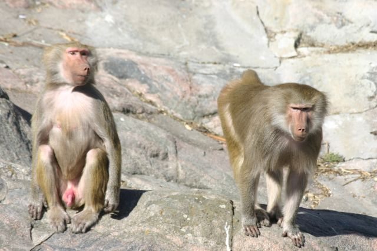

Experiences
If you are looking for new experiences for your city break in addition to cafes and restaurants, Helsinki is just right place to look. You can get around town during the summer with easy access to city bikes or electric scooters quickly and cheaply.
You can also easily reach the waters to admire the archipelago off Helsinki and for example explore the historic Suomenlinna.
We've also collected a few recommendations for your trip so you won't be overwhelmed by the vary of choices.
Allas Sea Pool

"Allas Sea Pool is a seaside spa and wellness oasis in Helsinki acting with rebewable energy. With us you can swim, sauna, work out, eat and drink well."
See here for more!Yrjönkatu Swimming Pool

"Yrjönkatu Swimming Pool was inaugurated on June 4, 1928. For decades it was the only public indoor swimming pool in Finland. The hall is architecturally valuable, representing the classicism of its time example."
See here for more!Löyly

"Löyly, Helsinki | A piece of the beautiful Helsinki coastline, it offers wonderful experiences and warm moments both for city dwellers and travelers from home and from the seas."
See here for more!Hernesaarenranta

"Hernesaarenranta is an oceanfront event center with good transport links. There is great gigs and different interesting events."
See here for more!Hietaniemi beach

"Hietaniemi's shallow sandy beach (Hietsu) is attractive especially in hot weather, when the beach fills up sun worshipers. In addition to lounging, there is beach volleyball and basketball. "
See here for more!Cruise

"Explore Helsinki Deeper! On Royal Line sightseeing routes you can see the most beautiful scenery, all major attractions and hear interesting stories."
See here for more!Suomenlinna

"The UNESCO World Heritage Site Suomenlinna is a cultural treasure that began in the 18th century in the middle of Finland when Sweden belonged."
See here for more!Korkeasaari Zoo
"Korkeasaari Zoo was founded in 1889 to teach and educate in order to make a national park would be an uplifting pastime. Today, on the Korkeasaari island you can discover about 150 animal species from the tundra, tropical rainforests and deserts."
See here for more!Linnanmäki

"Linnanmäki is the oldest and most popular amusement park in Finland, located in the Alppila district of Helsinki. Linnanmäki has over 40 amusement park facilities, plenty of games and restaurants and cafes. The most popular piece of equipment at the amusement park is the wooden roller coaster, which has delighted entertainers since 1951."
Katso täältä lisää!Hakaniemi Market Hall

"The renovation of the Hakaniemi Market Hall began in early 2018 and is expected to be completed in this year 2020. During the renovation, the hall will continue to operate in temporary facilities, In the glass hall, Hakaniemi market square."
Katso täältä lisää!